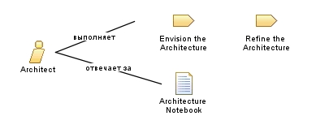

| Роль: Architect |
 |
|
 |
||
| В первую очередь выполняет | ||
|---|---|---|
| Дополнительно выполняет | ||
| Изменяет |
|
|
The person in this role leads or coordinates the technical design of the system and has overall responsibility for facilitating the major technical decisions expressed as software architecture. This typically includes identifying and documenting the architecturally significant aspects of the system as views that describe requirements, design, implementation, and deployment. This role is also responsible for providing the rationale for these decisions, balancing the concerns of the various stakeholders, reducing technical risks, and ensuring that decisions are effectively communicated, validated, and followed. This role works closely with project managers in staffing and planning the project, because it is recommended that the team be organized around the architecture. This role also works closely with analysts and developers to make sure that the architecturally significant requirements are assigned to the proper components of the system. |
| Квалификация | Architects must be well-rounded people with maturity, vision, and a depth of experience that allows for grasping issues quickly and making educated, critical judgments in the absence of complete information. Specifically, the person must possess this combination of qualifications:
From an expertise standpoint, the Architect also needs to show both design and implementation abilities. However, from the design perspective, the effective Architect typically exhibits these traits:
|
|---|---|
| Подходы к назначению | The person in this role should be engaged in the project from start to finish. For smaller projects, a single person can act as both Architect and project manager. However, it is better to have these roles performed by different people to ensure that the pressures of one role does not cause neglect of the other role. The Architect and Project Manager must work together closely. For systems of scale, it is a common best practice to have an architecture board that is populated by the architects of each system, plus one or two chief architects. In such cases, the members of the architecture board collectively play the role of the Architect. |
This program and the accompanying materials are made available under the |